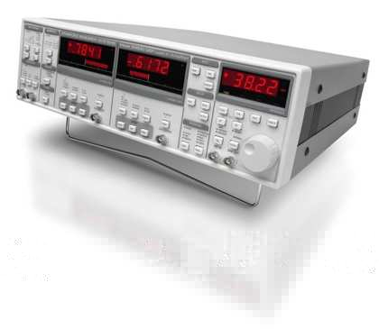
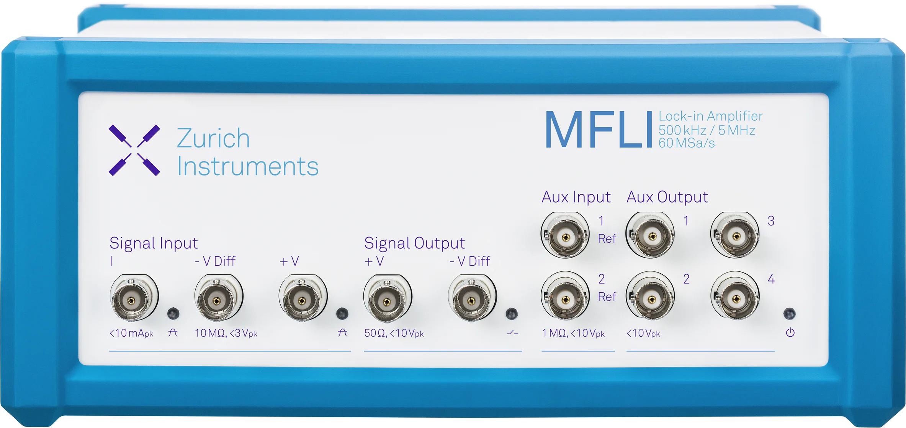

Definition: Equivalent noise bandwidth is the width of an ideal rectangular filter that transmits the same white-noise power as the actual measurement filter.
At a glance
- Use the ENBW for the exact instrument and filter mode.
- Reference frequency and measurement bandwidth are different quantities.
- Determine whether the instrument reports filtered RMS noise or an already normalized spectral density before applying the conversion.
A detector-noise result reported only in volts RMS is incomplete. The measured RMS value increases as the admitted bandwidth increases, even when the underlying detector noise density is unchanged. ENBW removes that bandwidth dependence.
The basic conversion
\(V_{n,\mathrm{rms}}\) is the standard deviation or RMS fluctuation of the settled, filtered output. ENBW is in hertz. The result is expressed in volts per square-root hertz.
Warning: reference frequency is not measurement bandwidth. A lock-in can detect at \(1\,\mathrm{kHz}\) while its output filter admits only \(1.25\,\mathrm{Hz}\) of equivalent noise bandwidth.
What ENBW means graphically
White-noise power at the output of a filter is proportional to the area under its power response, \(\lvert H(f)\rvert^2\). ENBW replaces the real response with a unit-height brick-wall filter having the same area.
ENBW is not the \(-3\,\mathrm{dB}\) bandwidth
The \(-3\,\mathrm{dB}\) bandwidth identifies one point on the response curve: where coherent-signal power has fallen by one half. ENBW integrates the entire power response. For common low-pass filters, ENBW is therefore larger than the \(-3\,\mathrm{dB}\) bandwidth.
Worked example
- Reference frequency: \(1\,\mathrm{kHz}\)
- Time constant: \(T=100\,\mathrm{ms}\)
- Filter slope: 12 dB/octave
- Measured \(X\) standard deviation: \(12.0\,\mathrm{nV}_{\mathrm{rms}}\)
For a two-pole cascaded-RC filter:
The \(1\,\mathrm{kHz}\) reference and \(1.25\,\mathrm{Hz}\) equivalent noise bandwidth describe different parts of the measurement.
Why the conversion can differ between instruments
ENBW is fixed by the complete filter transfer function, not simply by the brand name. Instruments differ when they implement different RC, Butterworth, Bessel, FIR, moving-average, synchronous, or antialias filters, or when they define the displayed time constant differently.
Use the manual for the instrument and filter mode actually used. The same displayed time constant does not guarantee the same ENBW on two unrelated instruments.
Cascaded-RC ENBW conversion factors
For cascaded-RC low-pass filters, the conversion is set by filter order and the instrument's time-constant convention. The MFLI and SR830 provide a useful comparison: over their shared first four orders, they use the same coefficients because the underlying filter model and convention are the same.
| Order | Roll-off | \(f_{-3\,\mathrm{dB}}\) | \(B_{\mathrm{ENBW}}\) | \(B_{\mathrm{ENBW}}/f_{-3\,\mathrm{dB}}\) | SR830 \(B_{\mathrm{ENBW}}\) |
|---|---|---|---|---|---|
| 1 | 6 dB/oct | \(0.1592/T\) | \(0.2500/T\) | \(1.5708\) | \(0.2500/T\) |
| 2worked example | 12 dB/oct | \(0.1024/T\) | \(0.1250/T\) | \(1.2203\) | \(0.1250/T\) |
| 3 | 18 dB/oct | \(0.0811/T\) | \(0.09375/T\) | \(1.1554\) | \(0.09375/T\) |
| 4 | 24 dB/oct | \(0.0692/T\) | \(0.078125/T\) | \(1.1285\) | \(0.078125/T\) |
| 5 | 30 dB/oct | \(0.0614/T\) | \(0.06836/T\) | \(1.1138\) | — |
| 6 | 36 dB/oct | \(0.0557/T\) | \(0.06151/T\) | \(1.1046\) | — |
| 7 | 42 dB/oct | \(0.0513/T\) | \(0.05636/T\) | \(1.0983\) | — |
| 8 | 48 dB/oct | \(0.0479/T\) | \(0.05238/T\) | \(1.0937\) | — |


Practical instrument examples
ENBW is a general measurement concept, but the correct calculation depends on what the instrument filters, records, and reports. The examples below show why the manual and the actual acquisition mode matter.
MFLI: explicit bandwidth conversion
The MFLI documentation separates time constant, \(-3\,\mathrm{dB}\) bandwidth, and noise-equivalent power bandwidth. When a time series of \(X\) or \(Y\) is converted from RMS noise to spectral density, the filter-specific ENBW is required unless the selected software function has already performed that normalization.
Laboratory observation: a legacy analog lock-in can sometimes feel more transparent for narrowband detector-noise work because the user sees a filtered analog output without hidden statistical normalization. That practical advantage should not be confused with a universal claim that analog instruments are always more accurate.
PAR/EG&G 124A: direct analog output

The PAR124A lacks modern automated averaging and data acquisition, but it can be effective for stable, narrowband measurements when its own input noise and filter characteristics are known. Its ENBW must be obtained from the PAR124A filter response rather than borrowed from another instrument's table.
Instrument reporting conventions
Before dividing by \(\sqrt{B_{\mathrm{ENBW}}}\), determine whether the instrument is returning a filtered RMS fluctuation or a value that has already been normalized to spectral density. The labels and units shown by the interface are not always sufficient.
SR830 example: do not normalize X Noise or Y Noise a second time. The front panel shows a numerical value without a visible “/√Hz” suffix, but the value is already reported in \(\mathrm{V}/\sqrt{\mathrm{Hz}}\) with the output-filter ENBW included. This is stated in the SR830 manual, Section 3, “Noise Measurements,” p. 3-26 (PDF page 53).
The built-in result uses a moving mean absolute deviation, or MAD, rescaled to estimate RMS noise under a Gaussian-noise assumption. For precision work, inspect and analyze the settled \(X\) or \(Y\) time series rather than relying only on one scalar display value.
Account for the instrument noise floor
Instrument noise is independent of ENBW normalization and must be included in the uncertainty budget. Uncorrelated detector and instrument contributions combine in quadrature:
Combining a \(10\,\mathrm{nV}/\sqrt{\mathrm{Hz}}\) detector contribution with a \(6\,\mathrm{nV}/\sqrt{\mathrm{Hz}}\) instrument contribution gives approximately \(11.7\,\mathrm{nV}/\sqrt{\mathrm{Hz}}\), a 17% increase. At \(30\,\mathrm{nV}/\sqrt{\mathrm{Hz}}\), the same instrument contribution raises the result to approximately \(30.6\,\mathrm{nV}/\sqrt{\mathrm{Hz}}\), only about 2%.
For HgCdTe and other low-noise detectors, ENBW is therefore only one part of the measurement. Preamplifier gain, drift, microphonics, line pickup, random-telegraph events, and estimator behavior can be equally important.
Common ENBW interpretation errors
- Confusing the lock-in reference frequency with the output noise bandwidth.
- Using \(-3\,\mathrm{dB}\) bandwidth and ENBW as if they were identical.
- Dividing a noise value already reported in \(\mathrm{V}/\sqrt{\mathrm{Hz}}\) by \(\sqrt{B_{\mathrm{ENBW}}}\) a second time.
- Applying one instrument's time-constant conversion to a different filter topology.
- Using \(R=\sqrt{X^2+Y^2}\) as a zero-signal noise estimator; its mean is positively biased.
- Ignoring preamplifier and lock-in input noise when referring the result back to the detector.
A reproducible workflow
- Record detector temperature, resistance, bias, reference frequency, preamplifier gain, lock-in input configuration, time constant, filter order, and ENBW.
- Allow both detector operating point and output filter to settle.
- Acquire \(X\) or \(Y\) versus time and calculate the standard deviation after removing the mean.
- Refer the measured noise through the preamplifier gain to the detector input.
- Divide by \(\sqrt{B_{\mathrm{ENBW}}}\) only when starting from a filtered RMS fluctuation.
- Repeat with a shorted input, open input, and known resistor to identify instrument, pickup, and Johnson-noise limits.
- Save enough settled data that the bandwidth-time product is large compared with unity; \(B_{\mathrm{ENBW}}T_{\mathrm{record}}\ge 100\) is a useful starting target for stationary Gaussian noise.
Infrared detector noise analysis
Brooks Photonics evaluates detector noise spectra, bandwidth, measurement artifacts, bias dependence, and instrument limits for HgCdTe, InSb, and related infrared detectors.
Discuss a datasetReferences
Instrument documentation verified July 27, 2026.